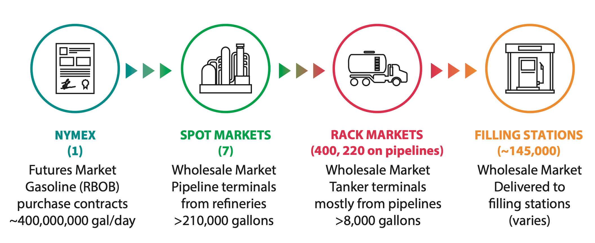
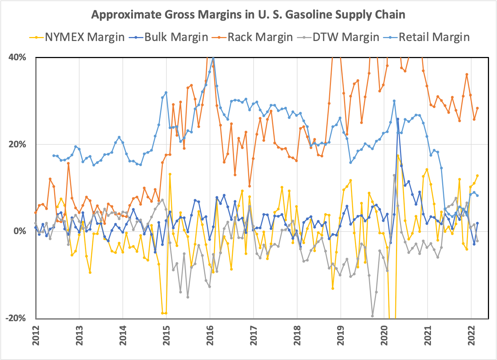

This installment revisits a “pseudo-political” science piece 1 I put out earlier this year.
The central questions that I’d like to address today are
Why do gasoline prices vary from block to block? and
Who makes money from gasoline price increases?
If you think about it in basic economic terms, the first question is interesting all by itself. Gasoline is the ultimate commodity. In other words, most consumers aren’t all that particular about what they put in their vehicles. Often, they drive around, looking for the lowest possible price. To make matters worse, if you’re a gas station owner, you’re expected to put up prominent signs, easily visible to customers who are already in motion, that show your price, not to the penny, but a tenth of a penny! Simple economics says that gas station owners should lower their price until their profit per gallon is small, seeking to profit from volume and sales other than fuel. So, what’s the deal?
It’s impossible to generalize, so let’s look at a selection of gas stations with today’s prices (courtesy of GasBuddy.com). As of today (6/11/22), the Exxon station at 306 Rhode Island Ave NW in Washington, DC, sells regular unleaded for $5.23. Less than half a mile away, the Exxon station at 22 Florida Ave NW sells the same product for 40¢ less, $4.83. Across town, the Exxon station at 1601 Wisconsin Ave NW (in Georgetown) is $5.79. Finally, the cheapest gas in the city is at the warehouse “club” Costco (2441 Market St. NE), at $4.67.
What accounts for the differences? Is the owner of the Georgetown Exxon greedy, raking in almost $1 a gallon more than the Florida Ave. Exxon for ‘convenience’ or ‘location’? That may be part of the answer, but let’s look at the supply chain from the refinery to the filling station:

Let’s start at the filling station, the final stop on the chain and a place we’re all familiar with. To supply their customers, filling stations have to buy their fuel from a “rack” market and pay to have it delivered. But shouldn’t the two Exxon stations in NW DC pay the same wholesale price for their fuel?
Well, not necessarily. Filling stations can’t move and can’t afford to run out of gas, so they enter into supply contracts to ensure that their tanks are never empty. The suppliers (the ones with the tanker trucks) know the relative value of each location, so the supply contracts are priced by the location of the delivery. So, a tanker truckload of gasoline to Georgetown costs more than the same load to Florida Ave! Costco is a huge buyer, so it can afford to field its own fleet of tanker trucks, allowing consumers to benefit from its direct access to the rack.
The previous transfer of fuel, going from the “spot” market to the “rack” market, has similar economics. There are only 400 “rack” filling stations for tanker trucks to choose from. So, tanker companies are price takers themselves. In other words, they can’t exactly drive around to find the best price. Instead, they have to pay the price that the rack charges. Further, since different parts of the country have different blends, and there are different “grades” of gasoline, the pipeline's fuel must be graded and blended before it reaches the rack. That’s what those large storage tanks are doing. Each one holds millions of gallons of fuel formulated to hit a particular spec (e.g., 91 octane 15% ethanol).
Now, to the second question, who’s making money? Let’s take another step back in the supply chain to its “origin”, NYMEX (the New York Mercantile EXchange). How does this play a role? The market is treacherous from a refinery’s point of view. They’re buying crude oil from a volatile market and incurring costs to convert it into raw gasoline (something traders refer to as RBOB, Reformulated Gasoline Blendstock for Oxygenate Blending). This makes a product in huge volumes that refiners cannot store, so they have to sell it immediately on the “spot” market regardless of its actual value. In this market, hundreds of thousands of gallons of fuel are sold “on the spot”, hence the name. For a refinery that must operate 24 x 7, there’s too much price risk to participate directly in the spot market. So what do the refineries do?
They use supply contracts to lock in prices. These so-called “futures” are standardized contracts with an inherent value that varies with the spot market, so refineries sell them at the same time as they’re buying crude oil, locking in their profit. Then market speculators trade these futures based on their belief in the future price of gasoline (hence the name). 2
OK. Now we’re finally to the subject of this installment. What did Putin’s aggression in Ukraine have to do with the price of gasoline? Well, traders on NYMEX make their money by placing bets on fixed-price contracts for RBOB. With the expectation of a supply shock, they bid up these contracts. Refineries are in the same market because they are also the supplier. They are contractually obligated to provide fuel even if their production falls short, so when prices are volatile, they are also exposed.
It occurred to me that there is data that could allow us to figure out who’s making money when the price of gasoline and oil diverge. The U. S. Energy Information Agency tracks the entire supply chain and publishes data from refineries through to average pump prices. So let’s take a look, shall we?

This is a pretty crude analysis, so don’t take the reputed “negative” margins too seriously: An average gross margin assumes that the fuel holder is just a distributor, simply passing it forward to the next step. Of course, that’s not accurate. Averaging prices that don’t account for volume or individual transactions is also problematic. There are too many variables to tease out the details in a short essay. It’s data, though, so you can see trends. In particular, look at the “rack margin” (orange line) is where blending for sale happens. There appears to be a step up in 2015. I think this happened because EPA enacted new rules at that point. This would affect the costs from the “rack” to the tanker (DTW). A few lines go off the charts, particularly at the start of COVID, where speculators lost big, and owners of tank lots (the rack) won big.
Since the Russian invasion, speculation (yellow line) appears toward its top end while the rack margin (formulation) has stabilized, so I conclude that speculators are squeezing the market. Filling station owners have taken their share as well. So, yes, prices are up overall, but there’s no clear winner. Except for the Saudis, as I covered earlier.
As a bit of insight, I would recommend that the Biden administration consider suspending the EPA’s formulation requirements to bring down prices in the near term. Eyeballing the above, that action (certainly anathema) could drop gasoline prices by 10-20% by reducing the amount of blending that is needed. The requirements would, of course, be reinstated gradually once the war is over.
Thank you for reading Healing the Earth with Technology. This post is public so feel free to share it.

A “future” is like a “call option” for RBOB, but delivery is required. In the rare instance that consumers abruptly stop buying fuel (as in the first months of COVID), these contracts can become troublesome. The final owner of the contract is contractually obligated to take delivery and, if they don’t have a ready buyer, has to store the product until it can be sold. The “future” then has a negative value.]